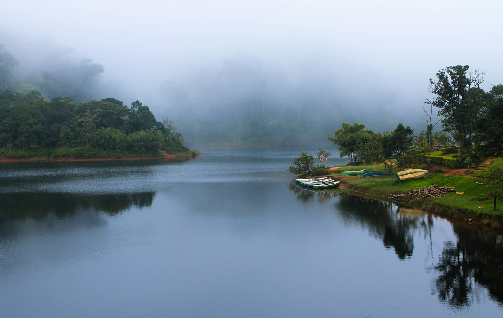
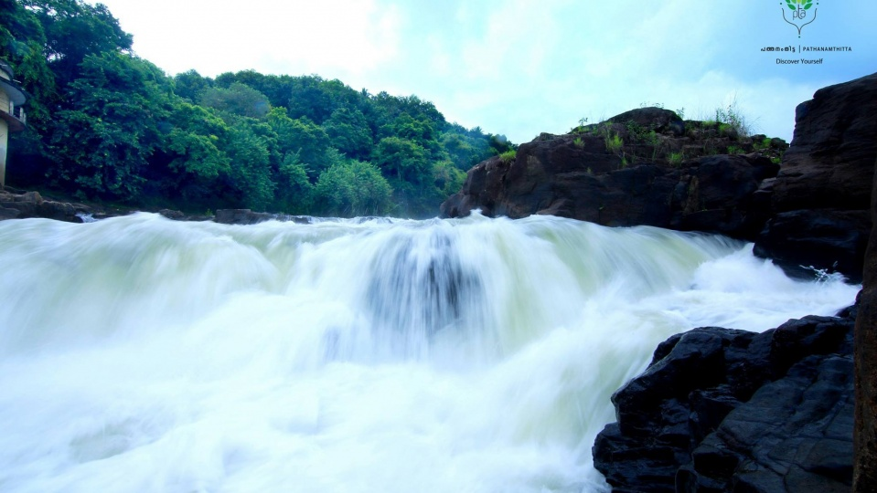

Pathanamthitta
Gavi

Gavi
Gavi Eco-Tourism , a project of the Kerala Forest Development Corporation, has caught the attention of tourists for a while now. The project is exclusive in many respects and the majority who visited were nature lovers and adventure tourists. Over a short period of time visitors to Gavi gradually increased, especially after 'Alistair International' the world acclaimed tourism major listed it among the leading eco-tourism centres and one of the must-see places in India.
A highlight of the Gavi Eco Project is the involvement of the local populace in its activities as guides, gardeners and cooks. This provides livelihood for the locals and also helps to create awareness on the conservation of nature. Gavi, located in Pathanamthitta district offers its visitors activities like trekking, wildlife watching, outdoor camping in specially built tents and night safaris.The place is rich in flora and fauna. There are hills and valleys, tropical forests, sprawling grasslands, sholas, cascading waterfalls and cardamom plantations. Endangered species including the Nilgiri Tahr and Lion-Tailed Macaque are often sighted at the outskirts of Gavi. With more than 260 species of birds including the Great Pied Hornbill, Woodpecker and Kingfishers, Gavi is literally a paradise for birdwatchers.
Perumthenaruvi

Nectar of waterfall-Peruthenaruvi
The Perunthenaruvi waterfalls on the banks of the Pamba river about 10 km from Erumely is a favourite place for both domestic and foreign tourists in Pathanamthitta district, Kerala. This is a natural fall, down a rocky path into a ravine about 100 feet deep. Ideal for an outing, this place is a popular picnic spot. It is accessible by road.
The name "Perunthenaruvi" means "The Great Honey Stream".
Great many bees, settled in the adjacent woods, have transformed here to a Kingdom of beehives.
Naturally, the stream flowing through this area came to be called the great honey stream - Perunthenaruvi (also Perumthenaruvi) in local vernacular.
After splashing as a waterfall, this honey stream further along its course, gets poured into River Pampa.
The rocky terrain majestically extends above and below the waterfall. Mighty monsoon unites its droplets to bury bulk of these rocks. As soon as monsoon departs, rocks start to peep up again.